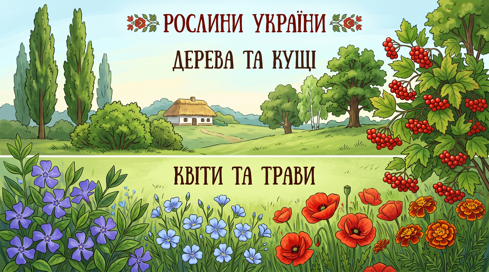

Рослини України |
||
| Людство живе в оточенні величезної кількості різноманітних рослин. Кожен із нас може по-різному характеризувати будь-яку рослину, але слід знати, що у природі нема нічого зайвого, тому кожна рослина може бути по-своєму корисною. Наші предки це добре розуміли, тому використовували у лікувальних цілях різні рослини. |
 |
В українському фольклорі зустрічаються згадки про величезну кількість рослин, багато з яких мають лікувальні властивості. Проте лише деякі з них здобули особливу любов українського народу та стали символічними для національної культури українців. Лікарських рослин,
які використовують у народній і професійній
|